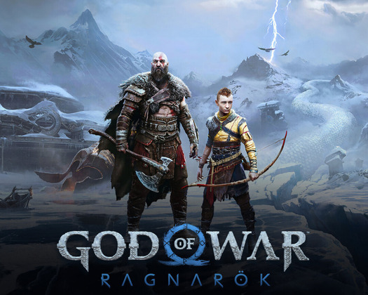
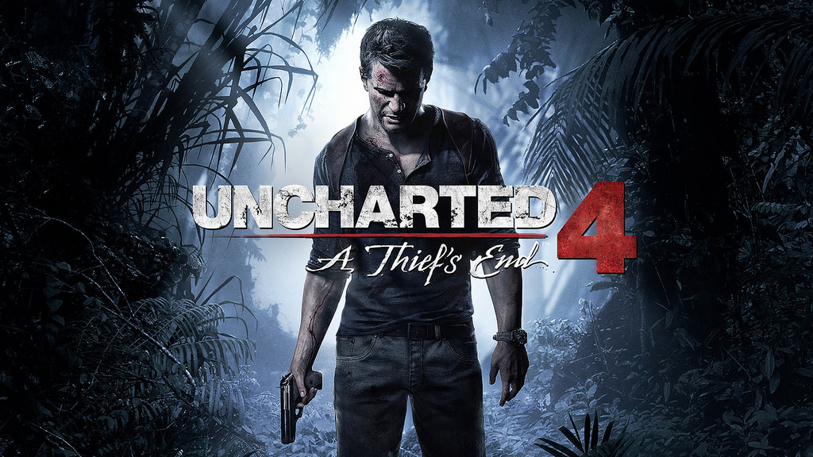
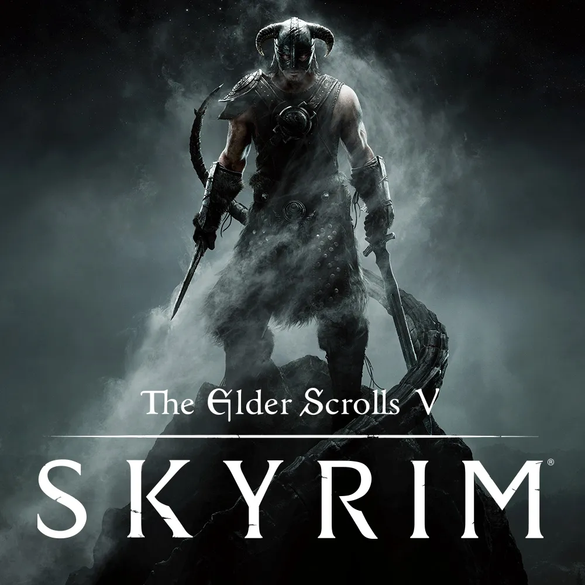
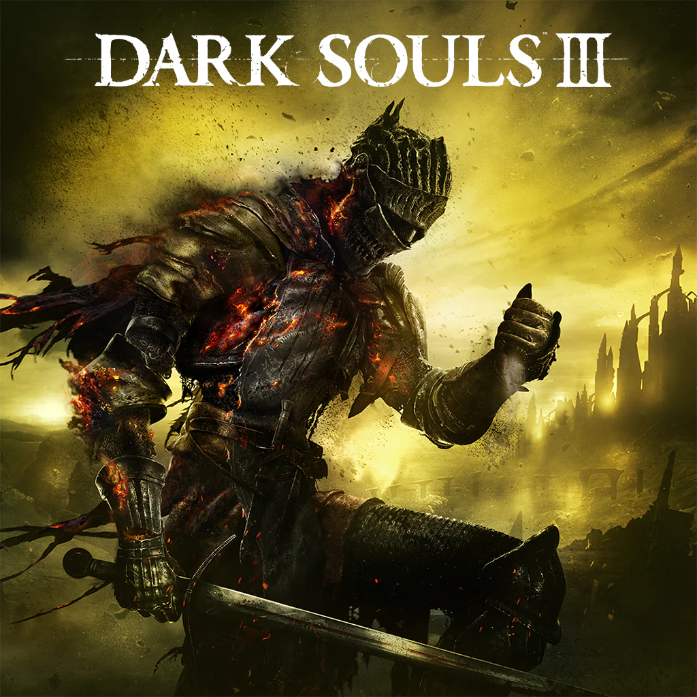
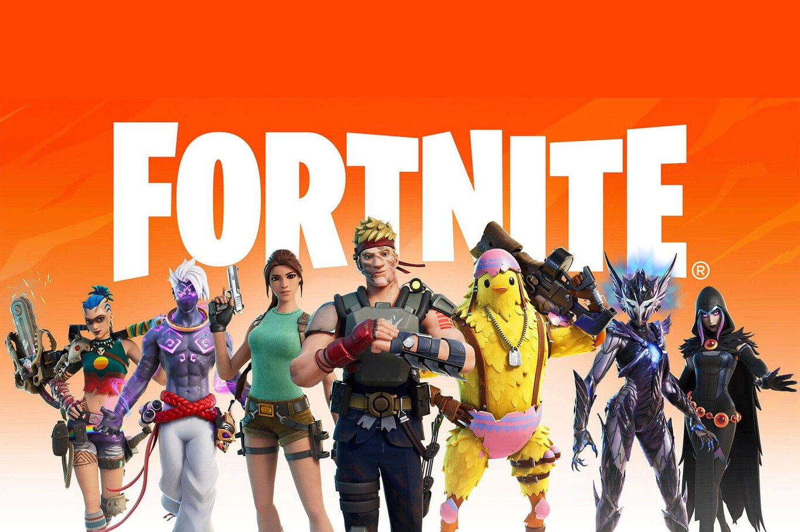

Tipos de videojuegos
Videojuegos de accion |
Se centran en la velocidad, los reflejos y la coordinación.
|
 |
Videojuegos de Aventura |
Priorizan la exploración y la narrativa.
|
 |
videjuegos de Rol (RPG) |
El jugador controla un personaje que evoluciona con el tiempo.
|
 |
Videojuegos de Acción-RPG |
Combinan acción en tiempo real con elementos de rol.
|
 |
Videojuegos de Disparos (Shooter) |
El objetivo principal es disparar a enemigos.
|
 |